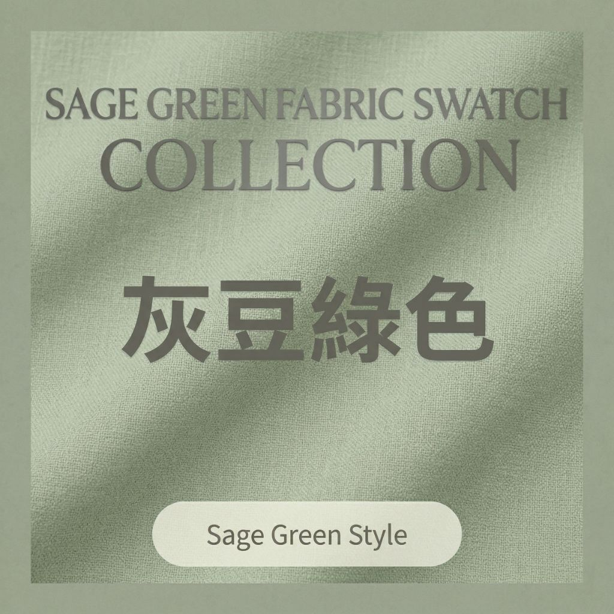
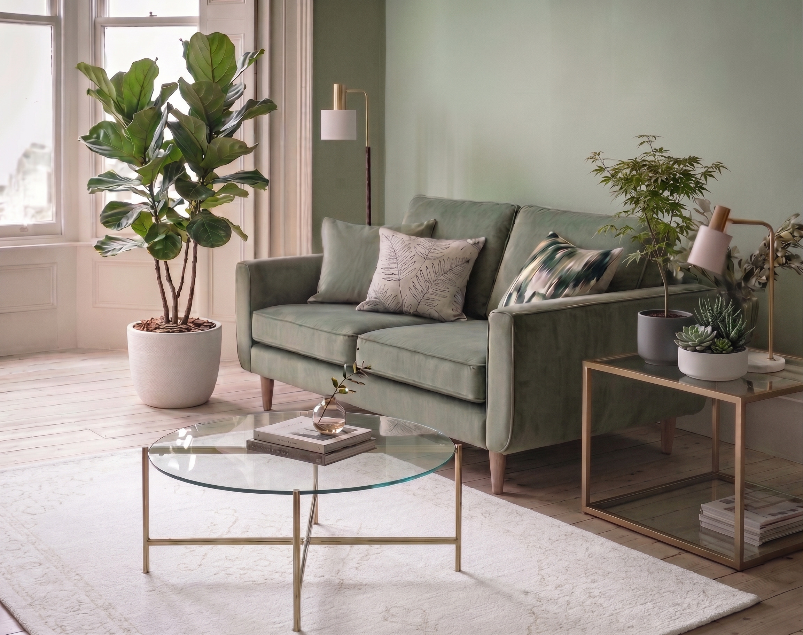
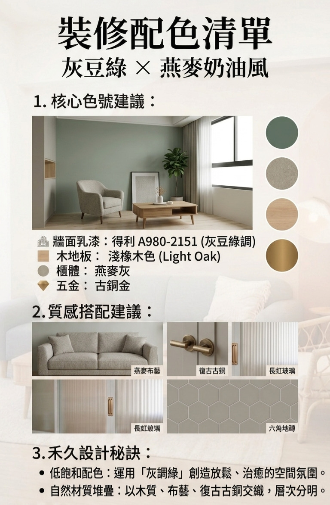
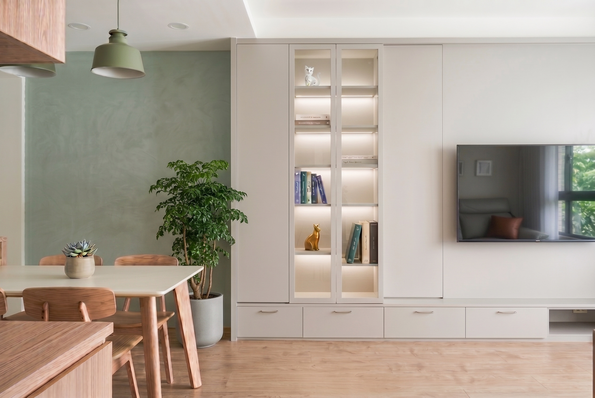
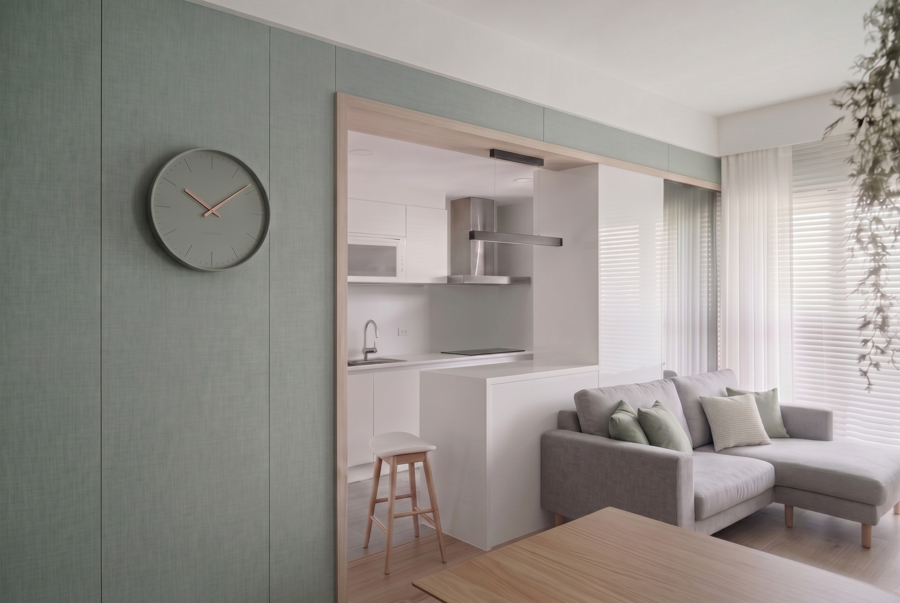
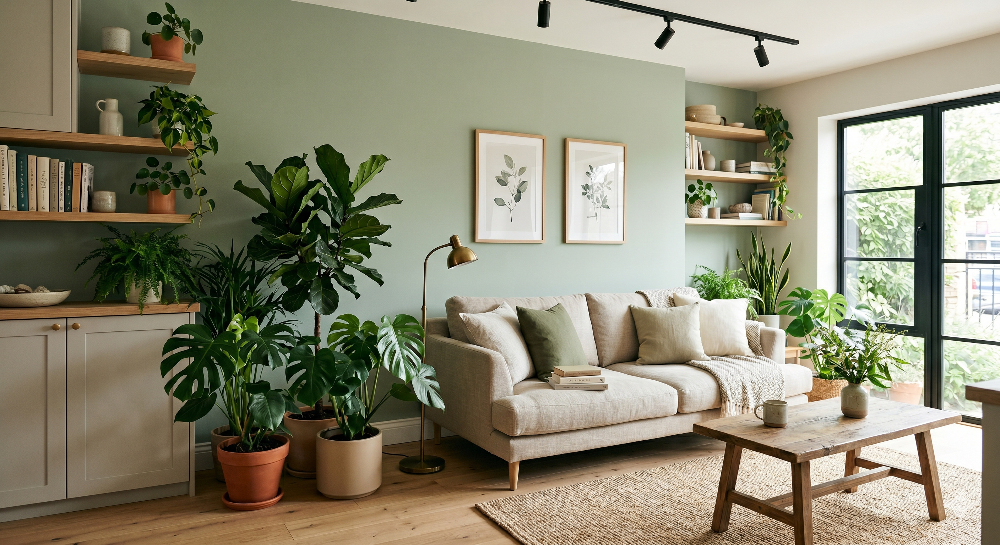

想將大自然的氣息帶入家中，卻又怕綠色太過鮮豔？
「灰豆綠（Sage Green）」是完美的解答。這是一種加入了大量灰調與白調的綠色，它不搶眼、不刺眼，卻能讓空間瞬間安靜下來。

1. 舒壓色彩的運用邏輯：心理學與感官平衡
綠色能有效緩解眼部疲勞與心理壓力。
在禾久的設計實踐中，我們選用 得利 A980-2151（灰豆綠調） 用於主牆，搭配 燕麥灰 的櫃體。燕麥灰比純白更溫暖，能中和綠色的清冷，兩者結合後能打破牆面的壓迫感，創造出一種清新且具有呼吸感的環境。


2. 自然感配色計畫：跨越空間的材質層次
要展現灰豆綠的高級感，材質的選擇是關鍵：
- 牆面基底： 灰豆綠調乳膠漆（霧面質地最能展現其高級感）。
- 地面延續： 淺橡木色地板。木頭的溫潤能平衡綠色的清冷，延續大自然的設計語彙。
- 對比亮點： 善用「復古古銅」與「霧黑」線條。
- 復古古銅： 帶有歲月痕跡的五金，最能襯托灰豆綠的質樸之美，賦予空間一種法式鄉村的優雅。
- 霧黑： 加入黑色線條（如軌道燈、邊框或細緻拉手），能讓柔和的空間瞬間變得俐落、有神，展現現代設計的張力。


3. 禾久設計觀點：自然材質的多層次堆疊
我們認為灰豆綠不僅僅是一個顏色，而是一種「生活的姿態」。
- 異材質的火花： 灰豆綠非常適合與「原木、棉麻、藤編」等自然材質搭配。
- 都市綠洲的完成： 灰豆綠牆面是植物最好的背景。透過大量的室內綠植（如琴葉榕或龜背芋），色彩上的同色系疊加能創造出深淺不一的層次，讓「家」成為名副其實的都市避風港。

